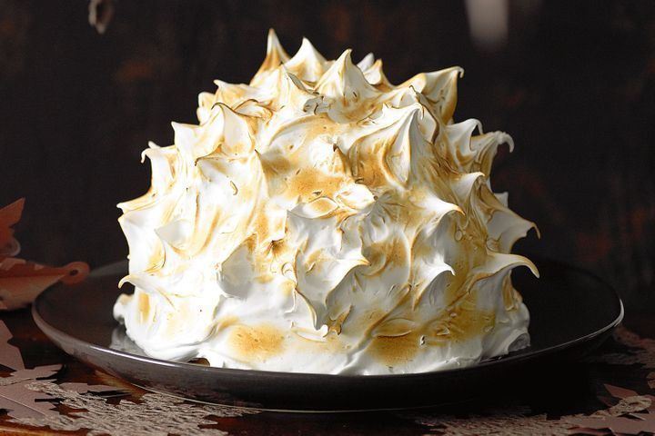

Coconut cherry bombe Alaska

Description
Nothing screams the 70s quite like sponge, ice cream and meringue drenched in rum and set on fire, right?
Ingredients
- 330g (1 1/2 cups) caster sugar
- 4 egg whites
Coconut ice-cream
- 80ml (1/3 cup) thickened cream
- 250ml (1 cup) milk
- 1 1/2 tbsp liquid glucose
- 25g (1/3 cup) shredded coconut, toasted
- 6 egg yolks
- 75g (1/3 cup) caster sugar
- 150ml coconut cream
Cherry Sorbet
- 110g (1/2 cup) caster sugar
- 1 lemon, rind peeled into strips, juiced
- 280g frozen pitted cherries
Sponge
- Vegetable oil, to grease
- 10 egg yolks
- 220g (1 cup) caster sugar
- 6 egg whites
- 75g (1/2 cup) plain flour, sifted
- 40g cornflour, sifted
- 80g unsalted butter, melted, cooled
Steps
- To make coconut ice-cream, combine cream, milk, glucose and shredded coconut in a saucepan and bring almost to the boil.
- Meanwhile, whisk egg yolks and sugar in a bowl until well combined, then gently whisk in coconut cream. Whisking continuously, gradually add milk mixture to yolk mixture and whisk gently to combine. Transfer to a clean saucepan over medium heat and stir continuously with a wooden spoon until mixture is thick enough to coat the back of the spoon (don’t boil).
- Strain through a fine sieve into a bowl. Place in a sink one-third full with iced water and cool, stirring occasionally, for 15 minutes. Cover with plastic wrap and refrigerate for 45 minutes. Churn in an ice-cream machine until frozen. Transfer to an airtight container and freeze for 45 minutes or until very firm.
- To make cherry sorbet, combine sugar, lemon peel and 125ml (1/2 cup) water in a saucepan over medium heat and cook, stirring, until sugar dissolves. Cover with a lid, bring to the boil and cook for 5 minutes. Add cherries, reduce the heat to low and simmer for 3 minutes or until cherries have softened. Discard the lemon peel and transfer the mixture to a bowl. Cool for 15 minutes.
- Process mixture in a food processor until smooth. Strain through a fine sieve into a bowl, then stir in lemon juice. Refrigerate for 45 minutes, then churn in an ice-cream machine for 35 minutes or until frozen.
- To make sponge, preheat oven to 160C. Grease a 26cm x 38cm oven tray and an 18cm springform pan with oil, then line both with baking paper. Using an electric mixer, whisk egg yolks and 110g (1/2 cup) sugar until thick and pale.
- Using an electric mixer, whisk egg whites and a pinch of salt to soft peaks. Add remaining 110g (1/2 cup) sugar, 2 tablespoons at a time, whisking after each addition until combined, to stiff peaks. Using a metal spoon, fold in one-third of the egg white mixture into the yolk mixture, then gently fold in remaining egg white mixture. Fold in flours, then the butter.
- Spoon 2 cups batter into the lined pan and spread the remainder into the tray. Bake for 15 minutes or until golden and centre springs back when pressed with your fingertip. Cool in the pan and tray, then turn out sponge onto a wire rack.
- To assemble, lightly grease a 2.25L pudding basin and line base with baking paper. Cut sponge rectangle in half widthwise, then trim each half to make 2 x 18cm x 26cm rectangles. Cut each rectangle lengthwise into 4 x 4.5cm x 26cm rectangles, then cut each in half on the diagonal to make 16 long triangles.
- Place 1 triangle in the pudding basin with the tip pointing towards the centre of the base. Repeat with the remaining triangles to make a snug sponge layer with no gaps, trimming the tips to fit. Trim sponge layer 2cm from the top of the basin. Freeze for 10 minutes to firm.
- Spread a 2cm-thick layer of coconut ice-cream over sponge, leaving a cavity for the cherry sorbet. Spoon sorbet into cavity and level. Top with the sponge round; it should sit inside the pudding basin. Cover with plastic wrap and freeze for 4 hours or until firm.
- To make Italian meringue, combine sugar and 60ml (1/4 cup) water in a saucepan over low–medium heat and stir until sugar dissolves. Brush down the side of the pan with a wet pastry brush to prevent sugar crystals forming. Increase heat to medium and cook, without stirring, for 4 minutes or until syrup reaches 115C on a sugar thermometer (see Notes).
- Using an electric mixer, whisk egg whites and a pinch of salt to soft peaks. With mixer on low speed, gradually add syrup in a slow, steady stream, then increase speed to high and whisk for 10 minutes or until stiff and glossy.
- Invert pudding basin onto a plate. To remove basin, wipe a hot tea towel over, then lift the basin. Working quickly, spoon the meringue over the bombe, then using an off-set spatula or palette knife, spread evenly in a swirl pattern. To make spikes, using your fingertips, lightly and quickly pull the meringue all over (see Notes). Using a kitchen blowtorch, caramelise meringue evenly, then serve the bombe Alaska immediately.
Home